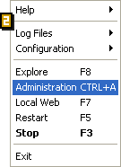

 Avant d'ouvrir l'"Administration" ou le "Web local", vérifier qu'easyphp.exe est lancé (ex.: Démarrer>Programmes>EasyPHP>EasyPHP) et que les serveurs fonctionnent (double-cliquer sur l'icône d'EasyPHP à côté de l'horloge [1] : les status d'Apache et de MySQL doivent être au vert).
Avant d'ouvrir l'"Administration" ou le "Web local", vérifier qu'easyphp.exe est lancé (ex.: Démarrer>Programmes>EasyPHP>EasyPHP) et que les serveurs fonctionnent (double-cliquer sur l'icône d'EasyPHP à côté de l'horloge [1] : les status d'Apache et de MySQL doivent être au vert).
Administration
Faire un clic droit sur l'icône d'EasyPHP [1] et sélectionner "Administration"[2]. Cette page vous permet entre autre de gérer vos bases de données et d'administrer vos alias.
Web local
Faire un clic droit sur l'icône d'EasyPHP [1] et sélectionner "Web local" [2] afin de visualiser vos fichiers (cf. "Introduction à EasyPHP").